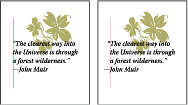

Hanging punctuation
Hanging punctuation makes the edges of text appear more even by moving punctuation marks outside the paragraph margins.

Paragraph without hanging punctuation (left) compared to paragraph
with hanging punctuation (right)
Illustrator provides the following options for hanging punctuation:
- Roman Hanging Punctuation
- Controls the alignment of punctuation marks for a specific paragraph. When Roman Hanging Punctuation is turned on, the following characters appear 100% outside the margins: single quotes, double quotes, hyphens, periods, and commas; the following characters appear 50% outside the margins: asterisks, tildes, ellipses, en dashes, em dashes, colons, semicolons. To apply this setting, insert the cursor in the paragraph and select Roman Hanging Punctuation from the Paragraph panel menu.
- Optical Margin Alignment
- Controls the alignment of punctuation marks for all paragraphs within a type object. When Optical Margin Alignment is turned on, roman punctuation marks as well as the edges of letters (such as W and A) hang outside the text margins so that the type looks aligned. To apply this setting, select the type object and choose Type > Optical Margin Alignment.
- Burasagari
-
Controls the alignment
of double-byte punctuation marks (available in Chinese, Japanese,
and Korean fonts). These punctuation marks are not affected by the
Roman Hanging Punctuation option or Optical Margin Alignment option.
Keep in mind that the paragraph alignment determines the margin from which the punctuation hangs. For left-aligned and right-aligned paragraphs, punctuation hangs off the left and right margin, respectively. For top-aligned and bottom-aligned paragraphs, punctuation hangs off the top and bottom margin, respectively. For centered and justified paragraphs, punctuation hangs off both margins.
Note: When a punctuation character is followed by a quotation mark, both characters hang.